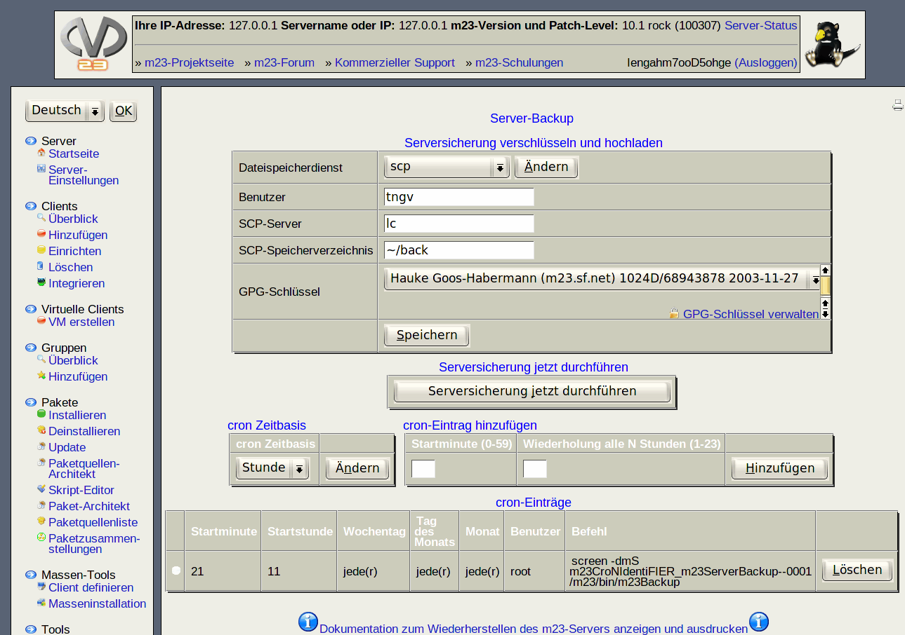

Dieser Dialog hilft Ihnen, Ihren m23-Server automatisch in regelmäßigen Abständen zu sichern. Die Backups beinhalten neben den Daten für die Wiederherstellung des m23-Servers zusätzlich die Konfiguration des Betriebssystems und eine Liste der installierten Pakete. Mit diesen Informationen ist es möglich, den m23-Server nach einem Datenverlust oder einer sonstigen Beeinträchtigung in den zuletzt gesicherten Zustand zurückzuversetzen. Die gesicherten Daten können auf einen externen Server im eigenen Netz oder im Internet hochgeladen werden, wobei sie mittels GPG verschlüsselt werden, um vor unbefugtem Zugriff gesichert zu sein.

Der Dialog zum Sichern, Verschlüsseln und Hochladen ist in zwei Teile unterteilt.
- Serversicherung verschlüsseln und hochladen: Dieser Abschnitt befaßt sich mit der Verschlüsselung der Backupdaten und dem Kopieren derselben auf einen externen Server.
- cron-Einstellungen: Die Parameter für den cron-Dämon legen schließlich fest, wann der m23-Server automatisch gesichert werden soll.
Unterabschnitte
dodger
2012-11-22